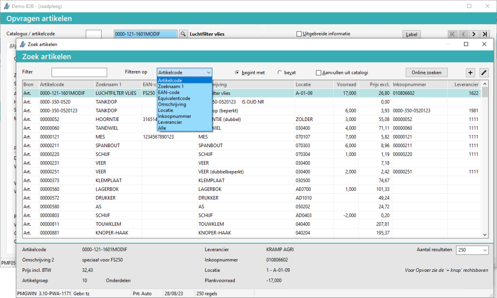
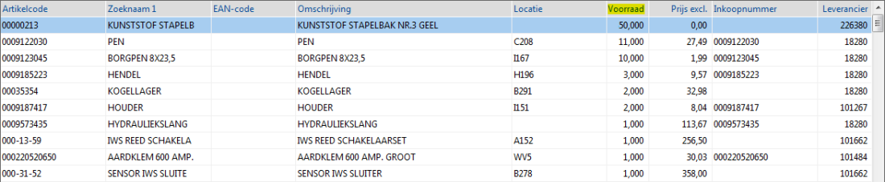
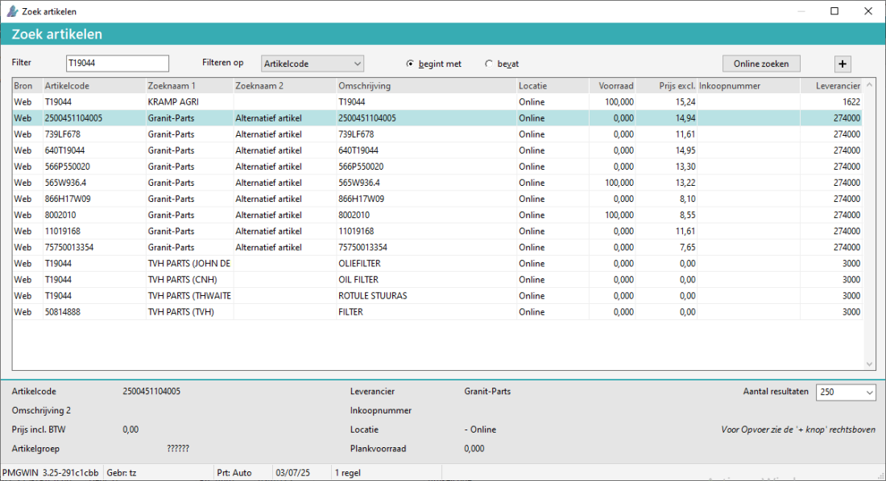

Ga naar Opvragen artikelen (AO) of F7
-
of bij een andere programma.
Bij artikelcode druk op F4 (zoeken).
-
Het scherm Zoek artikelen verschijnt.
De artikel details worden in de voet weergegeven.

Opmerking: In de voet kan het aantal resultaten (250) aangepast worden, zodat er meer regels weergegeven worden.
Opmerking: De knop Online zoeken verschijnt alleen als er bij de leveranciers (online) parts inquiry aanwezig is.
Opmerking: Details is niet zichtbaar als dit programma aangeroepen wordt via Opvragen - of Onderhoud artikelen (ABA).
- De regels worden gesorteerd op de artikel voorraad.

Bij enkele leveranciers verschijnen ook alternatieve artikelen.
Bij Granit en TVH verschijnen alternatieve artikelen, via de knop Online zoeken instelling, vanaf versie 3.28.

 (
(